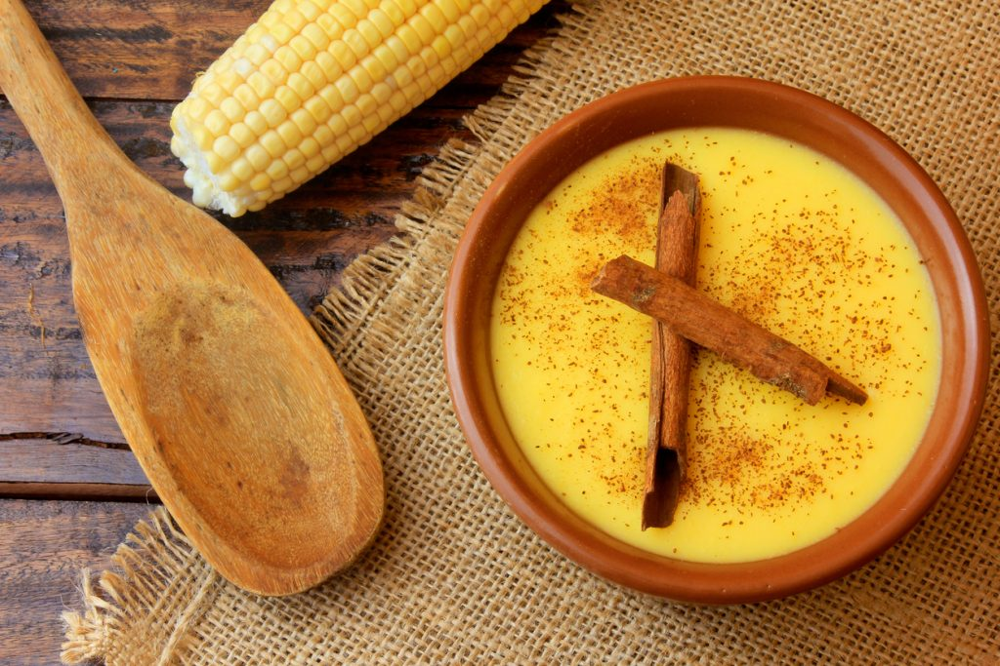

Canjica

Sweet Corn Pudding with canned corn
This canjica recipe from Northeast of Brazil will surprise you. This traditional dish is different and it has a smooth texture, and in this version we are going to use canned corn, but you can use corn cobs.
To give more flavour we are going to use condensed milk, coconut milk and cinnamon powder for final touch. It is easy to prepare but it takes a few minutes to get ready to the ideal texture. It will worth every single minute! Check it out and let's try on.
Ingredients:
- 1 canned corn (whole)
- 1 condensed milk
- 200ml coconut milk
- 250ml milk
- 1 tablespoon cornstarch
- 20ml fennel seeds and whole cloves tea
- Pinch of salt
- Cinnamon powder
Directions:
- Strain the corn in a sieve and add to the blender.
- Add milk, coconut milk to the blender until it is homogeneous mixed, and sieve the liquid in a pan.
- Mix cornstarch in 2 spoons of water to dissolve, prepare the fennel and clove tea, salt, and add in the pan with the liquid corn.
- Put the condensed milk at the same pan and mix it.
- Cook in a medium heat and stir frequently until boiled.
- When it is boiling, reduce the heat and keep stirring for approximately 15 minutes after it starts bubbly, or until it is thick.Transfer it to a platter or to some individual bowl.
- Transfer it to a platter or to some individual bowl.
- Add powdered cinnamon as you like.
- Let stand until it is warm, and it is ready to serve.